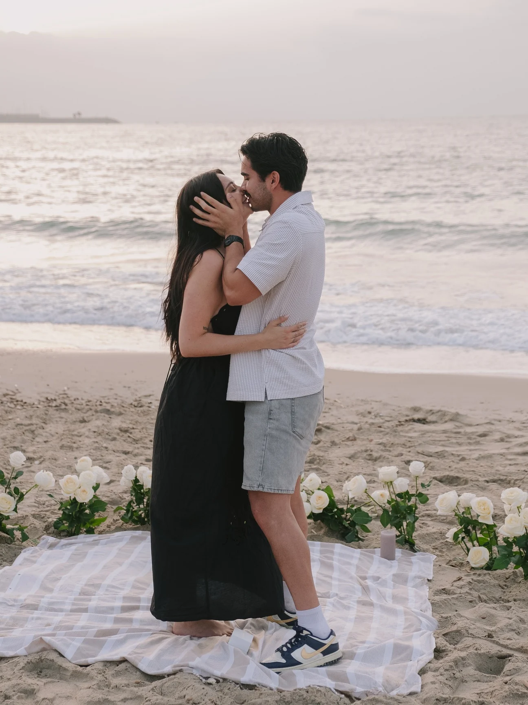
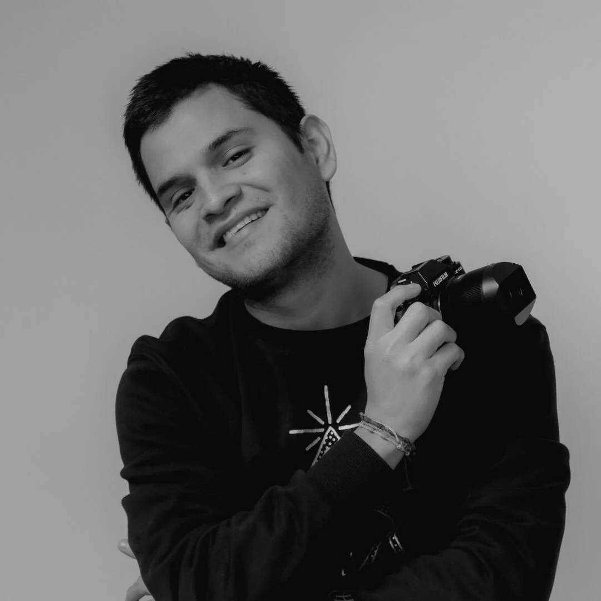

Fotógrafo en Valencia · Toda España
Historias reales.
Miradas que quedan.
Fotografía documental y editorial para bodas, personas y marcas que quieren recordar lo que de verdad ocurrió.
Explorar el trabajo ↗
01 / 04
La emoción
sin posar
La emoción
sin posar
Una forma de mirar
La cámara desaparece cuando
la historia empieza.

Trabajo desde la calma, buscando gestos pequeños, luz honesta y esa energía que no se puede repetir. Cada reportaje se construye con presencia, sensibilidad y un lenguaje visual muy personal.
Bodas · Retrato · Editorial · Eventos
Residente en Valencia · Disponible en toda España.
Selección de historias
El trabajo


¿Tienes una historia?
Hablemos de
lo que viene.
Cuéntame qué quieres guardar para siempre y te responderé con una propuesta a medida.
Escribir un email ↗◎ @patrickllempen